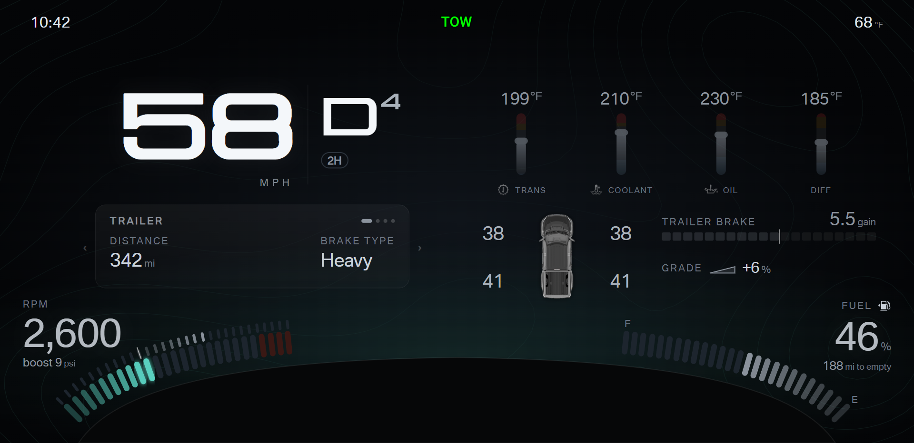
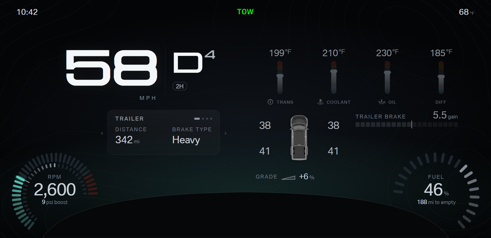

F150 cluster · Design round 9 · Fuel bottom right
Fuel sits in the bottom-right corner on every layout, as on most clusters, so the driver finds fuel in one place in every mode.
Builds on the round 8 hierarchy; the A and B options stay the same. Pick A or B for each layout from this round.
- Fuel module: a band along the shroud with E at the corner and F toward the center, the level in the corner, and the range below the level.
Towing B shows the same fuel module as a corner dial.
- Daily layouts: instant economy moves to the bottom-left corner. Daily B option B keeps the temperature fan on the left.
- Towing: RPM and boost stay bottom left. The trailer brake moves to the upper right, where the fuel bar sat: a segment bar with the gain as
a grey range and a marker, lit in the accent colour while braking.
- Low fuel turns the module amber, and the low-fuel light turns the module red, in the same corner on every layout.
Daily A · pick A or B
Daily B · pick A or B
Towing · pick A or B
A · Corner modules: RPM and boost left, fuel right; trailer brake bar upper right

B · Corner dials: RPM and boost left, fuel right; trailer brake bar upper right
